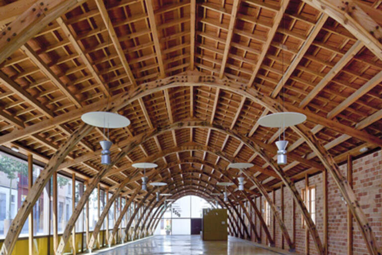

Visita · Mataró
La Nau Gaudí és el primer edifici que va construir l’arquitecte modernista Antoni Gaudí . Formava part de la fàbrica que va construir per encàrrec de la Societat Cooperativa l’Obrera Mataronina,…